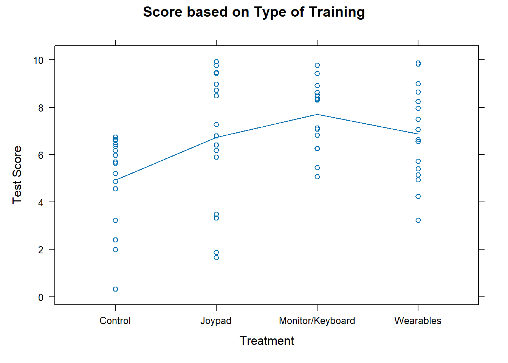

Code
library(mosaic)
library(DT)
library(pander)
library(car)
library(tidyverse)
## Data from original article:
virtual <- read.csv("../data/virtual_training.csv", header=TRUE) An experiment was done to help train people in the procedure to launch a lifeboat. This was a Completely Randomized Design with 16 subjects per treatment, for a total of 64 subjects. The response variable is the performance on a procedural knowledge test. The treatments included: Lecture/Materials (Control) (1), Monitor/Keyboard (2), Head Monitor Display/Joypad (3), and Head Monitor Display/Wearables (4)
Source: J.Jung and Y.J. Ahn (2018). “Effects of Interface on Procedural Skill Transfer in Virtual Training: Lifeboat Launching Operation Study,” Computer Animation & Virtual Worlds, Vol. 29, pp. e1812. https://doi.org/10.1002/cav.1812
Applying a one-way ANOVA to this study, we have the following model:
\[ y_{ij} = \mu + \alpha_i + \epsilon_{ij} \]
Where \(y_{ij}\) is the \(j^{th}\) observation from treatment \(i\)
\(\mu\) is the grand mean of the dataset. Also referred to as an overall mean or benchmark.
\(\alpha_i\) is the effect of the training method. 1 = control/lecture, 2 = Monitor/keyboard, 3 = head monitor/joypad, 4 = head monitor/wearables.
\(\epsilon_{ik}\): the error term, or residual term of the model. Since there are 16 subjects for each treatment, \(j\) ranges from 1 to 16.
The null hypothesis is that the effect of all training methods, represented by α, is equal to zero. This is formally written as follows.
\[ H_0:\alpha_\text{Control} = \alpha_\text{Monitor/Keyboard} = \alpha_\text{Joypad} = \alpha_\text{Wearables} = 0 \]
The alternative hypothesis states that at least one of the effects due to material is different than zero \[ H_a: \text{at least one } \alpha \text{ is different than 0} \]
Using these hypotheses will allow for us to address the question whether any of the type of training is different to improve test score.
We will use a level of significance of α = 0.05 for the analysis.
For the analysis, we perform the following one-way ANOVA
| Df | Sum Sq | Mean Sq | F value | Pr(>F) | |
|---|---|---|---|---|---|
| Treatment | 3 | 65.66 | 21.89 | 4.941 | 0.003931 |
| Residuals | 60 | 265.8 | 4.43 | NA | NA |
The p-value for this test is significant (p = 0.003931). Based on this result, the null hypothesis is rejected and we have sufficient evidence that at least one of the effects due to training is different for post test score.
In order to trust this result, we must verify the requirements for the ANOVA model are met. The requirement of equal variances appears to be met since the residuals versus fitted plot shows roughly a constant variance within each vertical group of dots.
The QQ-plot of residuals on the right is used to check whether residuals are normally distributed. There are a few points outside the boundaries that might be a concern for this ANOVA requirement, but generally there are no strong departures from normality and so we consider this requirement to be met also.
The following plot shows which types of training increases the post test score.

The averages are illustrated with the blue line in the plot above and the table below shows the means, standard deviations, and sample sizes for each of the five different materials.
It appears the the best type of training may be the Monitor/Keyboard type training. The highest mean came from the Monitor/Keyboard where the average procedural knowledge post test score was 7.708. The head monitor training methods may perform better on different types of assessments that were not part of this study. A future study could look into other training methods to improve readiness in lifeboat launching.